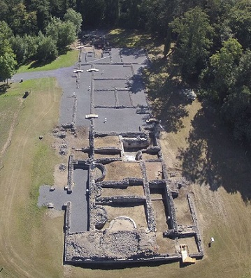

|
B É L G I C A
La conquista romana comenzó con la conquista del
territorio que actualmente es el estado belga por parte de Julio César
en el año 57 a.e.c. Para entonces estaba habitada por tribus celtas y
germanas. Fue organizada como una provincia romana, a la que se llamó
Galia Bélgica. Más tarde se dividió en cuatro provincias. El término del
período romano en Bélgica puede fijarse en el siglo V, cuando los
francos, pueblo germánico, dominaron el norte del país. El sur siguió
estando fuertemente romanizado. De época romana destaca el Museo Galo-Romano y la muralla de Tongeren.
En Bruselas destaca El Museo del Cincuentenari con su colección de época romana.
El Parque Arqueológico de La Malagne, en Rochefort, una las villas romanas más grandes del norte de la Galia. Es uno de los mejores ejemplos de una población agrícola de la Galia septentrional.

Tambien quedan en pie algunos lienzos de la muralla galo-romana, visitables en el Musée de la Tour Romaine. La muralla data del siglo III. Llegó a contar con 20 torres defensivas, de las cuales se conservan restos de una de ellas. En el museo también se exhiben monumentos funerarios y esculturas procedentes del vicus.
El museo Galo-romano de Ath. En él se exhiben ejemplos únicos de barcos fluviales galo-romanos. Los navíos son una piragua y una chalana, de los siglos I y II-III, respectivamente. Estos barcos se hallaron en Pommeroeul en 1975 durante la excavación del canal que conectaba este lugar con Condé-sur-Escaut.
|
| MENÚ | IMPERIO ROMANO |